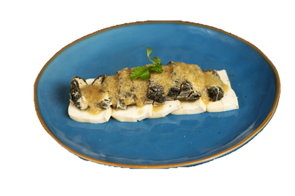

二家姐素食馆
Restaurant IJT
Welcome to Restaurant IJT
Meat-Free Since 2021
自2021年起坚持无肉饮食
Catering for Special Occasions We proudly offer catering for events such as birthdays, house openings, and more.
在IJT餐厅，我们庆祝植物性饮食的变革力量。我们的菜肴用心制作，特色自制豆腐和创新鱼类，激发您的味蕾，同时提供卓越的营养益处。 特别场合的餐饮服务 我们自豪地提供生日、乔迁等活动的餐饮服务。
New Dishes 新菜色
算盘子 Stir-fry Abascus 自制炸肉 Homemade Fried Meat 辣子吉 Spicy Chicken 芥兰豆腐 Kailan Toufu 咸蛋零食 Salted Egg Snack 肉松茄子 Meat Floss with Brinjal 鸳鸯余 Double Fish


特菜 Special Dishes
西兰花炒带子 Scallops with Broccoli 麦片虾 Oatmeal Prawn 双味霞 Double Flavour Shrimp 酱爆虾 Spicy Prawn 寿桃 Birthday Bun 

前菜 Appetizer
水浒传 Crispy Vege Salad 沙拉豆腐 Crispy Toufu Salad 蔬果沙拉 Fresh Fruits with Salad 

其他 Others
脆皮叉烧 Crispy Char Siew 素鹅 Fried Duck 南乳炸肉 Nam Yu Fried Meat 

自制余 Homemade Fish
黑森林 Marmite Brinjal 忘不了 Assam Fish 姜蓉余 Steam Ginger Fish 咖喱余 Curry Fish 咸鱼花腩煲 Salted Fish Claypot 香椿余 Assorted Toona Fish 咸余 Salted Fish Fish 



蔬菜 Vegetable
肉松茄子 Meat Floss with Brinjal 鸳鸯芥兰 Double Kailan 先苦后甜 Marmite Bittergourd 四大天王 Four Heavenly with Petai 炒四大天王 Stir-fry Four Heavenly with Petai 佛钵 Yam Ring 咸蛋四季豆 French Beans with Salted Egg 先苦后甜 Marmite Bittergourd 


蔬菜 Vegetable
榄菜四季豆 Preserved Olive French Bean 三家亲 Curry Vegetable 香港芥兰 HK Kailan 斋煲 Mixed Vegetable 蕹菜 Kangkung 苋菜 Spinach 西洋菜 Watercress 油麦 Romaine Lettuce
莲藕 Lotus Root
酸甜莲藕 Sweet & sour Lotus 妈蜜莲藕 Marmite Lotus 奶油莲藕 Buttermilk Lotus 甘香莲藕 Kam Heong Lotus 黑椒莲藕 Blackpepper Lotus 黄姜干炒莲藕 Stirfry Turmeric Lotus 莲藕四疏 Stirfry Lotus


菇类 Mushroom
奶油菇 Buttermilk Mushroom 妈蜜菇 Marmite Mushroom 世界名片 Sweet & Sour Mushroom 椒盐菇 Salted Blackpepper Mushroom 姜片猴头菇 Fried Ginger with Monkey Mushroom 姜丝猴头菇 Stirfry Ginger with Monkey Mushroom 香椿猴头菇 Assorted Toona Monkey Mushroom 

豆腐 Toufu
肉碎豆腐 Minced Meat Toufu 麻婆豆腐 Mapo Toufu 豆根豆腐 Claypot Toufu 菜香豆腐 Minced Mushroom with Preserved Vege 阳光豆腐 Sunlight Toufu 酥炸豆腐 Fried Signature Toufu with Homemade Sauce 


汤类 Soup
紫菜豆腐汤 Seaweed Toufu Soup 蟹翅素汤 Shark Fin Soup 四川酸辣汤 Sze Chuan Soup 上汤苋菜 Spinach Soup 西洋菜汤 Watercress Soup 咸菜豆腐汤 Salted Pickled Soup面类 Noodle
干炒河 Fried Kuey Teow 星洲米粉 Singapore Fried Beehoon 水晶河 Stirfry Horfun with Bittergourd 滑蛋河 Wat Tan Hor 广府鸳鸯 Fried Ying Yong 纯纯米线 Fish Head Noodle饭类 Rice
榄菜炒饭 Preserved Olive Fried Rice 香椿炒饭 Assorted Toona Fried Rice 夏威夷炒饭 Hawaii Fried Rice 黄金炒饭 Pumpkin Fried Rice 瓦煲菇饭 Claypot Mushroom Rice

甜品 Dessert
黄金棒 Maltose with Yam Stick 芒果布丁 Mango Pudding 芒果西米露 Mango Sago 当值蛋糕 Cake of the Day餐饮服务和便当服务
Catering and Bento Box Services
联络 Contact： 011-16689113
地址 Address: 69, Jalan Hujan Rahmat 3,
Taman Oversea Union, KL
Facebook:二家姐Restaurant IJT
Instagram : restaurant_ijt